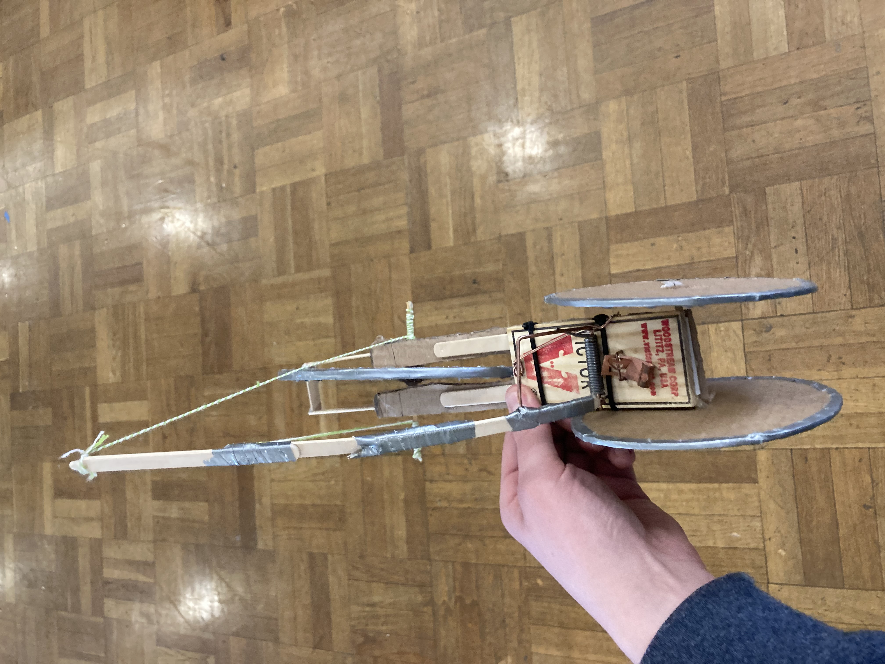

THIS IS CRAZY
Spongebob dies in Endgame
;0 :) :}
HAHAHAHAHAHA
Haha
Engineering Journal
9-2-22 -- Today we had a CAD challenge where we were challenged to create a house applieance in cad. We also began to create our Rube Goldberg Machine.
9-9-22 -- This week we continued to model and redesign our Rube Goldberg machines
9-16-22 -- We continued to build and remodel our Rube Goldberg machines to help them work better and function smoother. we have almost finished fully building and almost ready to test
9-23-22 -- Today we finished building and tested our Rube Goldberg Machine and it worked first try. We tryed several times and remodeled the design several times.
9-30-22 -- We have tested our machine and just need to update our websites. I've tryed to add an image but it doesnt seem to work properly.
10-7-22 -- We were given a presentation on our next short unit of Bioengineering and learned about what a Bioengineer does.
10-13-22 -- We had a challenge day today, the challenge was to make an object out of a single piece of paper that will be launched from a balcony and be the closest to a bin on the main level.
10-19-22 -- We spent the day building our bottle rockets based off of the cads and previous designs.

10-21-22 -- Today we launched our bottle rockets and ours was not the best, then again, none of them were good.
10-25-22 -- We started our next unit, Enviornmental Engineering. We also have updated our websites.
11-4-22 -- New month, new unit. we started our Electrical engineering unit. I dont like circuits, i mean it's actually interesting to learn, but i dont like doing the circuit building. And updating websites is so so. We've learned about circuits in Series and Parallel.
11-10-22 -- We started working with real breadboards. They are interesting and I have learned a lot from using them.
3-7-23 -- For the past 6 weeks, our class has been on a mission to design, build, and create a Mouse-Trap Car. The idea was to build a simple car out of cardboard, DVDs and tape that would be used as a mount for a mouse trap. The idea was that the mouse trap spring would be connected to a string connecting to the wheels of the car and, when triggered, the spring would pull the string attatched to the wheels of the car, forcing them to spin and propel the car forward. My car design was to have a big singular wheel in the back of the car used to maximum distance using a big gear ratio. We attempted to make a single rear wheel but the mouse trap was uneven and in it's force and it would lean the wheel to the left or right. My partner and I tried to add another string to the opposite side of the wheel to help balance it out and prevent the wheel from leaning to one side. This helped slightly but also revealed a new problem, the strings had to be perfectly alined and released at the perfect time. The added string also pulled the wheel up into the axle creating friction and preventing the wheel from moving. To help with the friction: we added small slices of a straw around the inside of the axle, repositioned the string and resized it before each test run.
4-25-23 -- For the past few weeks, mu group and I have been collecting and cutting our pieces of cardboard in preparation for when we recieve the duch tape needed to connect the cardboard pieces and begin the actual production of our boats.

5-1-23 -- In collection of the cardboard and in preparation for the duck tape, my group and I have decided to redesign our boat and add a small compartment beneath the surface of the water to help keep our center of gravity low and to assure ourselves that the boat will stay on the water and not tip or go above the surface.
5-15-23 -- In the past few weeks, we have made great progress on our boat. We have been able to piece together our cardboard and have started to create the lining on the inside and outside of the boat to prevent water from entering our water vessle. We did have to reenforce the ductape holding the boat together because it had previously broken apart. Last friday on the 12th, we were given the task to create a "water rollercoaster" which is a track made of paper that would create a path for a marble or ball to go down.
h